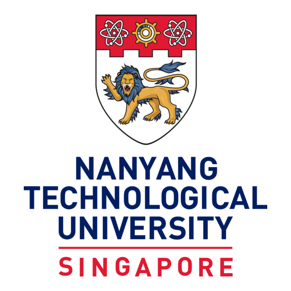
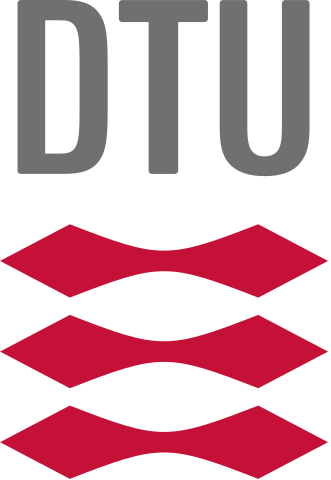

Experience
Education
Korea Advanced Institute of Science and Technology
B.S. in Physics
B.S. in Physics
2023 – Present
Korea Science Academy of KAIST
KAIST‑affiliated High School
KAIST‑affiliated High School
2020 – 2022
Research Experience
-
 KAIST
KAIST
Undergraduate Intern (PI: G.Y. Cho)Feb 2025 – PresentInvestigation of the error term of chiral central charge caused by deviations from a strict entanglement‑area law.
-

Nanyang Technological University
Undergraduate Intern (PI: N. Ng)Aug 2024 – Jan 2025(Ongoing) Exploring the correspondence between Gibbs‑preserving covariant channels and thermal operations.
-
KAIST
Undergraduate Intern (PI: J.Y. Choi)Sep 2023 – Feb 2024Learned optical experimental techniques and built a Python‑based GUI for a temperature‑control system.
-
KAIST
Undergraduate Intern (PI: J.W. Ahn)Jun 2023 – Sep 2023Developed a Rydberg‑atom‑graph approach for solving QUBO problems.
Exchange Programmes
-

Technical University of Denmark
Short‑term ExchangeSummer 2025Earned three credits.
-
Nanyang Technological University
Exchange ProgrammeAutumn 2024Research internship and completed 9 credits.
Quantum Information Study Group
-
Quantum Information Study Group
FounderApr 2024 – PresentOrganised a 15‑member joint KAIST/SNU group to discuss quantum‑information topics weekly.